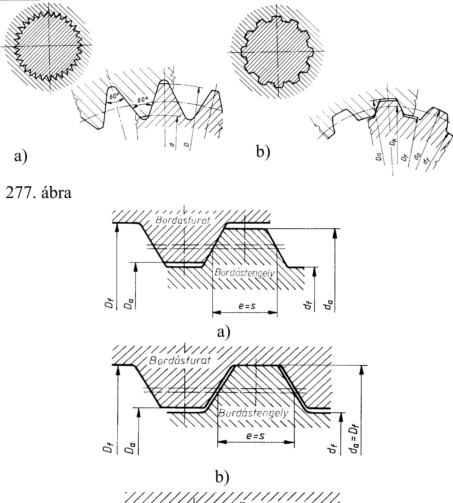

17. Bordás tengelykötés 17. Bordás tengelykötések Minden ékkötésnél az egyoldali befeszítés következtében a tengely és az agy tengelyvonala nem esik egy egyenesbe, ezért olyan esetekben, amikor a tengely és a felerősített elem egytengelyűségével szemben nagyobbak a pontossági követelmények, pl. fogaskerekeknél, az ékkötést nem célszerű használni. Bordás tengelykötést ék és reteszkötés helyett, nagy igénybevételű alkatrészeknél, nagy nyomaték átszármaztatásakor alkalmazunk. A bordástengely a bordásfuratú agyrészhez kapcsolódik, együtt gépelempárt alkotnak. A bordástengely és a bordásfuratú agy kapcsolódhat lazán vagy szorosan. Laza, vagyis elcsúsztatható a gépelem pár kapcsolata pl. egy sebességváltóban. Szoros lehet a kapcsolat pl. egy nagy teljesítményű hajtóműben. Az első esetben a nyomaték átvitele mellett fontos az is, hogy a szükséges időpontban a kapcsolat oldható legyen, a második esetben csak a nyomaték átszármaztatása a fontos. A bordástengely bordázatát marógépen, speciális maróval, vagy lefejtőmaróval, a bordásfuratot véséssel vagy húzótüskével készítik. A bordás tengelykötések három fajtája szabványos: - a párhuzamos oldalú bordás tengelykötés(279. ábra): - a barázdafogazatú bordás tengelykötés és (277. a) - az evolvensprofilú bordás tengelykötésű (277. b) A bordástengely és a bordásfurat központosítása háromféle módon lehetséges (278. ábra): - központosítás a belső átmérőn (a), - központosítás a külső átmérőn (b) és - központosítás a bordaoldalakon (c). A bordástengely és a bordásfurat jellemző adatai : a) párhuzamos oldalú bordástengely és bordásfurat esetén (279. ábra): a bordák száma z, a belső (lábhenger) átmérő d, a külső (fej henger) átmérő D, a bordaszélesség b b) evolvensprofilú bordástengely és bordásfurat esetén: tengely furat a bordák száma z z, a belső (lábhenger) átmérő df Df, a külső (fej henger) átmérő da Da, a bordaszélesség e s 17.1. Párhuzamos oldalú bordás tengelykötés A párhuzamos oldalú bordás tengelykötéseket könnyű, közepes, nehéz csoportokba sorolták. Ezek méretadatait táblázatok tartalmazzák. A belső átmérőn központosított bordástengelyek A és C kivitelben, a külső átmérőn és a bordaoldalakon központosított bordástengelyek pedig B kivitelben készülnek 280. ábra. A bordás tengelykötések jelölésének jellemző megadási módja: - a központosító felület betűjele - a bordaszám, a tengely és a furat d, D, és b névleges mérete - az átmérő és a borda szélességi méretének tűrését vagy illesztését. 279. ábra A kivitel B kivitel C kivitel 79
